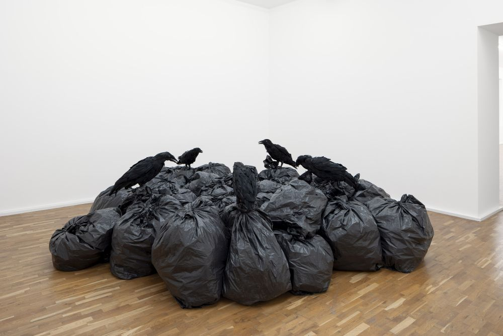
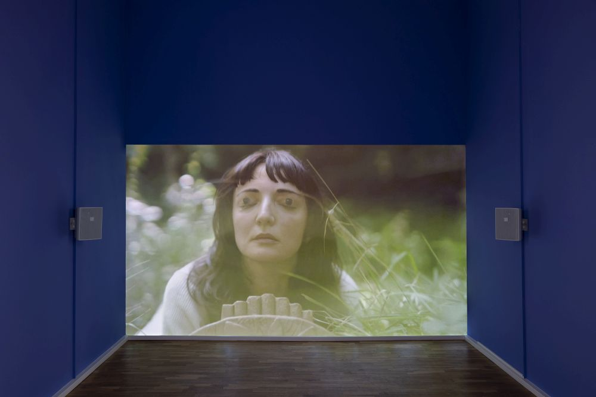
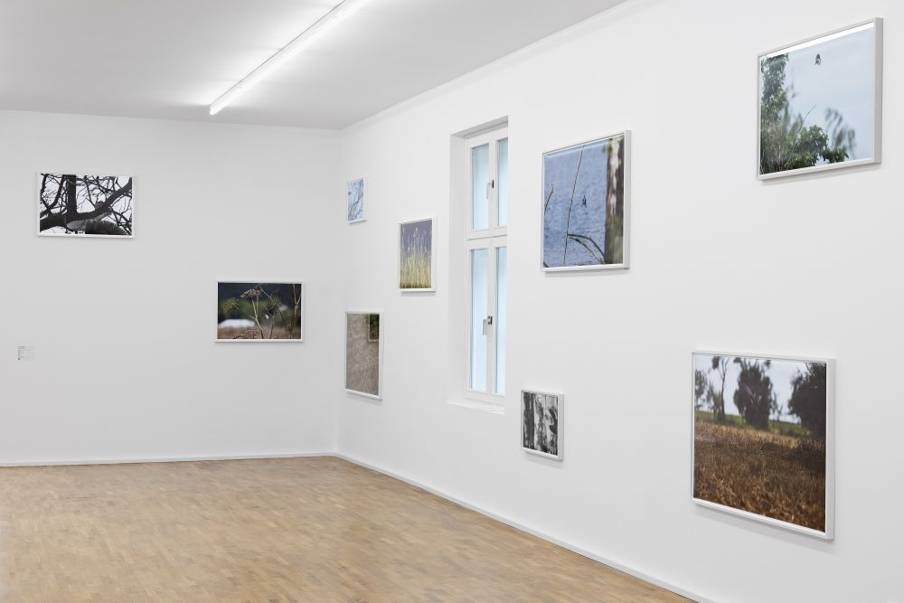
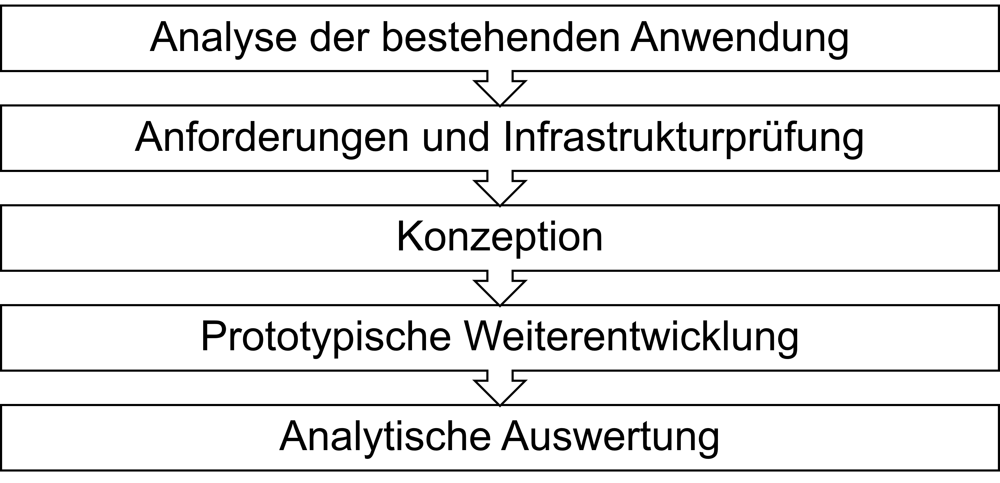

Projekt
Museum und Ausstellung
Die Fallstudie beschäftigt sich mit dem MGKSiegen und der dort vom 4. Juli bis zum 9. November 2025 gezeigten Ausstellung Für die Vögel. Die Ausstellung untersuchte den Vogel als Motiv in der Gegenwartskunst anhand unterschiedlicher künstlerischer Positionen.
Ausstellungsansichten Für die Vögel, MGKSiegen, 2025

Foto: Nicole Kreckel
Nicht unter CC BY-SA 4.0 lizenziert.

Foto: Nicole Kreckel
Nicht unter CC BY-SA 4.0 lizenziert.

Foto: Nicole Kreckel
Nicht unter CC BY-SA 4.0 lizenziert.
Technische Infrastruktur
Während der Ausstellung wurde ein webbasierter Ausstellungsguide bereitgestellt, der Audiospuren, Transkripte, Abbildungen und grundlegende Werkangaben enthielt.
Die Anwendung wurde mit Interkit erstellt, einem quelloffenen Authoring-System für mobile Kulturvermittlung. Interkit entstand im Rahmen des Forschungsprojekts Offene Welten, an dem auch das MGKSiegen beteiligt war. Das System ermöglicht, digitale Anwendungen über eine visuelle Oberfläche zu erstellen.
Ein wesentlicher Aspekt der Untersuchung der Masterarbeit war dabei, inwieweit sich die technischen Möglichkeiten von Interkit mit den verfügbaren Ressourcen und Kompetenzen des Museums vereinbaren lassen.
Vorgehen
Die Masterarbeit ist als Fallstudie mit einer prototypischen Weiterentwicklung einer Anwendung angelegt. Im Rahmen der Fallstudie wurden Interkit und drei weitere Systeme anhand eines Anforderungsprofils, das aus dem institutionellen und technischen Kontext abgeleitet wurde, untersucht. Auf dieser Grundlage wurde Interkit für die prototypische Umsetzung ausgewählt.
Das methodische Vorgehen umfasste die folgenden Schritte:

Literatur
Die Masterarbeit stützt sich auf Forschung aus den Bereichen der digitalen Museumsvermittlung, der Digitalen Kunstgeschichte und den Digital Humanities sowie der digitalen Transformation von Museen.
Die folgende Übersicht umfasst eine Auswahl der zentralen Literatur der Masterarbeit:
- Spallazzo, Davide (2012): Cultural heritage and mobile technologies: Towards a design framework. In: 18th International Conference on Virtual Systems and Multimedia, S. 109–116.
- Isomursu, Pekka et al. (2020): UX Evaluation of a Mobile Application Prototype for Art Museum Visitors. In: ACHI 2020, S. 428–433.
- Kim, Jihyun; Kim, So Yeon (2025): Multidimensional Analysis of Visitor Interaction With Museum Apps: Designing for Enhanced Museum Experiences. In: Curator: The Museum Journal 68 (4), S. 622–636. DOI .
- Carvalho, Ana; Matos, Alexandre (2018): Museum Professionals in a Digital World: Insights from a Case Study in Portugal. In: Museum International 70 (1–2), S. 34–47. DOI .
- Economou, Maria; Meintani, Elpiniki (2011): Promising Beginning? Evaluating Museum Mobile Phone Apps. In: Re-Thinking Technology in Museums 2011, S. 87–102.
- Euler, Ellen (2019): Open Access, Open Data und Open Science als wesentliche Pfeiler einer (nachhaltig) erfolgreichen digitalen Transformation der Kulturerbeeinrichtungen und des Kulturbetriebes. In: Der digitale Kulturbetrieb, S. 55–78.
- Kailus, Angela; Stein, Regine (2018): Besser vernetzt: Über den Mehrwert von Standards und Normdaten zur Bilderschließung. In: Computing Art Reader. DOI .
- Nikolaou, Polina (2024): Museums and the Post-Digital: Revisiting Challenges in the Digital Transformation of Museums. In: Heritage 7 (3), S. 1784–1800. DOI .
- AG Minimaldatensatz; Ando, Marita et al. (2025): Minimaldatensatz-Empfehlung für Museen und Sammlungen (MDS v1.1). Projektwebsite .
- Drucker, Johanna (2013): Is There a "Digital" Art History? In: Visual Resources 29 (1–2), S. 5–13. DOI.
Forschungsperspektiven
Vermittlung
Wie können digitale Inhalte und Funktionen für eine kunsthistorische Vermittlung gestaltet werden, die unterschiedliche Interpretations- und Nutzungstiefen anbieten?
Daten
Wie lassen sich die für die Vermittlung aufbereiteten Werk- und Kontextinformationen strukturieren, standardisieren, anreichern und für eine spätere Nachnutzung vorbereiten?
Infrastruktur
Wie lässt sich eine solche Vermittlungsanwendung unter den redaktionellen und technischen Bedingungen und dem institutionellen Rahmen des untersuchten Museums umsetzen und welche Anforderungen ergeben sich daraus an die technische Infrastruktur?